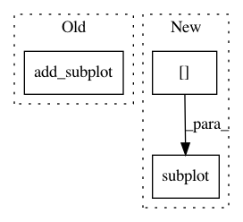

19f912e6cfd03597f340983e234fd826a18bfd3c,scanpy/plotting.py,,ranking,#Any#Any#Any#,607
Before Change
count = 1
for irank in range(len(adata[toolkey + "_rankings_names"])):
fig.add_subplot(n_panels_y,n_panels_x,count)
scores = get_scores(irank)
for ig,g in enumerate(adata[toolkey + "_rankings_geneidcs"][irank, :n_genes]):
marker = (r"\leftarrow" if adata[toolkey + "_zscores"][irank,g] < 0
else r"\rightarrow")
After Change
count = 1
for irank in range(len(adata[toolkey + "_rankings_names"])):
pl.subplot(gs[count-1])
scores = get_scores(irank)
for ig,g in enumerate(adata[toolkey + "_rankings_geneidcs"][irank, :n_genes]):
marker = (r"\leftarrow" if adata[toolkey + "_zscores"][irank,g] < 0
else r"\rightarrow")
In pattern: SUPERPATTERN
Frequency: 3
Non-data size: 3
Instances
Project Name: theislab/scanpy
Commit Name: 19f912e6cfd03597f340983e234fd826a18bfd3c
Time: 2017-02-28
Author: f.alex.wolf@gmx.de
File Name: scanpy/plotting.py
Class Name:
Method Name: ranking
Project Name: scikit-image/scikit-image
Commit Name: e6ed72a38ed22abf27cbe3e6dbee7fed3be9741b
Time: 2020-01-06
Author: marianne.corvellec@ens-lyon.org
File Name: doc/examples/segmentation/plot_regionprops_table.py
Class Name:
Method Name:
Project Name: theislab/scanpy
Commit Name: 94ec55bd5c13d75a590f82d41ff66e422bc11b1d
Time: 2017-02-20
Author: f.alex.wolf@gmx.de
File Name: scanpy/plotting.py
Class Name:
Method Name: _scatter